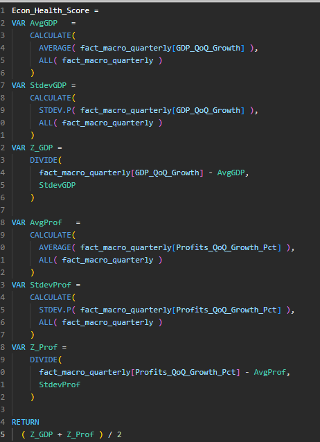
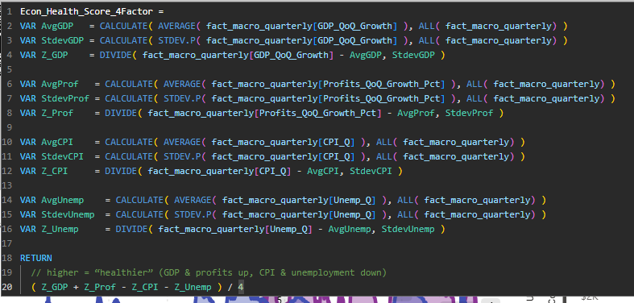
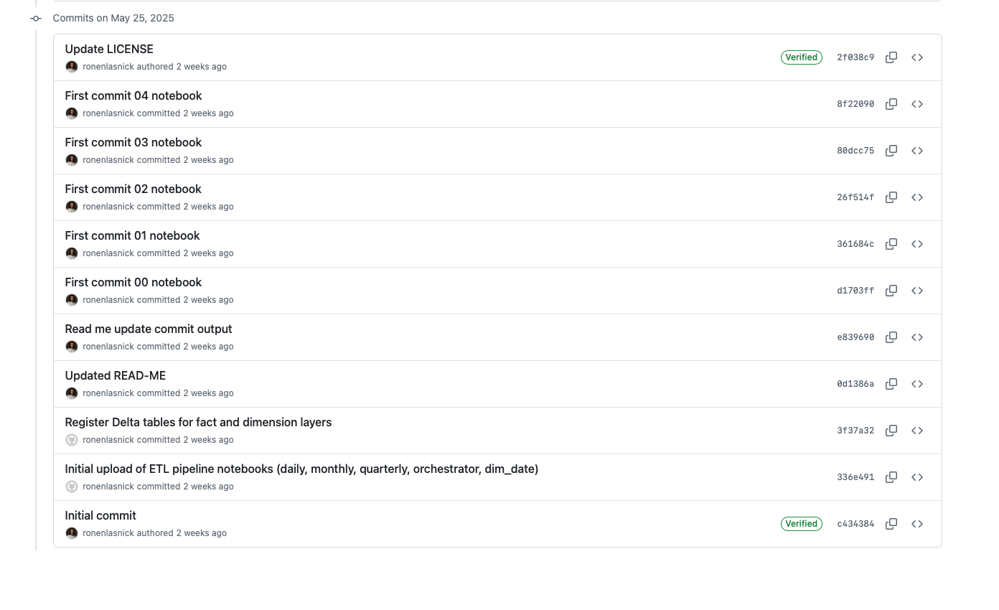

Problem
Economic indicators arrive at different cadences and are hard to compare without consistent dates, categories, and measures.
Public FRED economic data transformed into an analytics-ready model and published Power BI report, with supporting GitHub evidence for the pipeline and implementation.
Economic indicators arrive at different cadences and are hard to compare without consistent dates, categories, and measures.
Created modular Databricks/Spark ingestion for daily, monthly, and quarterly FRED series, then stored modeled tables in Delta.
Exposed an analytics model to Power BI with date slicing, indicator filters, and normalized economic-health measures.


